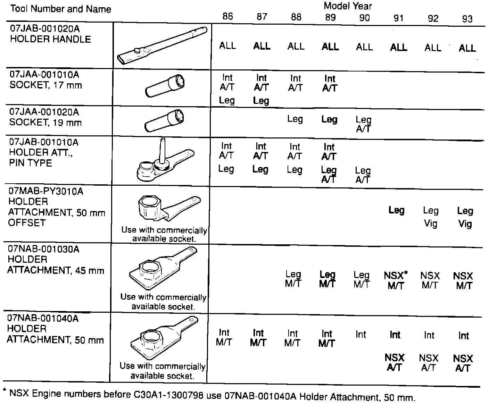

Crankshaft - Pulley Holder
October 6, 1992BULLETIN NO.
92-029
YEAR
1986 - 93
MODEL
ALL
VIN APPLICATION
ALL
Crankshaft Pulley Holder

The tools listed in the chart are necessary for the removal and torquing of the crankshaft pulleys.
For models after 1993, refer to the appropriate Service Manual for special tool application.
NOTE:
^ Before using the Crankshaft Pulley Holder tools, be sure the holder attachment is completely engaged into the Holder Handle and the thumb screw is tightened.
^ Before using the Holder Attachment, Pin Type 07JAB-001010A, apply Molybdenum disulfide grease to the inside diameter of the tool and the outside diameter of the socket(s) 07JAA-001 010A or 07JAA-001020A.
^ Do not use air impact tools with 17 mm Socket 07JAA-001010A, or 19 mm Socket 07JAA-001020A; you may damage the sockets.